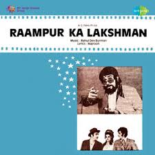
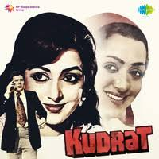
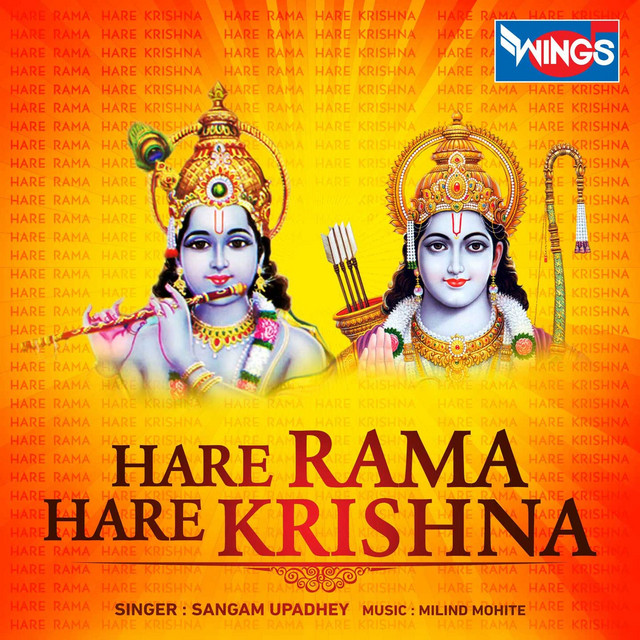
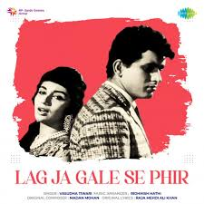
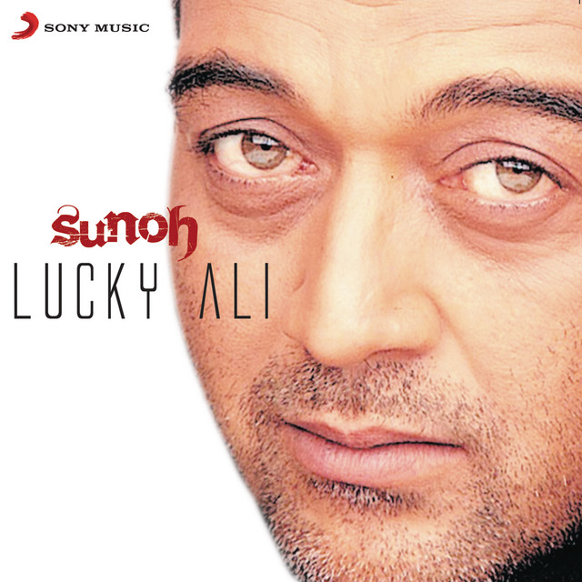
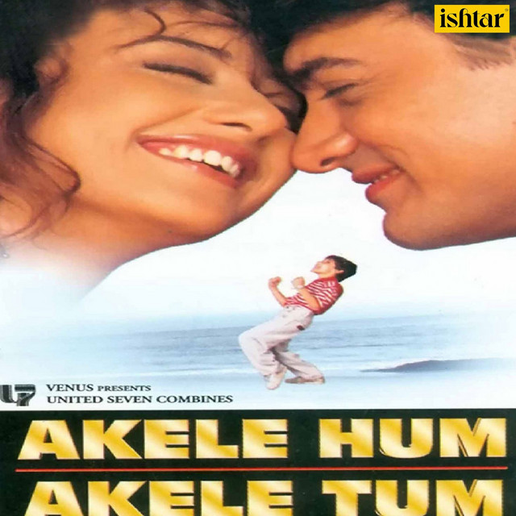

Famous Bollywood Songs
Shalin Shah
52 songs

Abhi Na Jao Chhod Kar

Ae Mere Pyare Watan

Ae Watan Watan Mere

Ajeeb Daastaan Hai Yeh
Ajeeb Daastaan Hai Yeh
Ajeeb Daastan Hai Yeh

Bade Achche Lagte Hain

Chhu Kar Mere Mann Ko

Chura Liya Hai Tumne Jo Dil Ko

Ek Ladki Ko Dekha To Aisa Laga

Ek Pyar Ka Nagma Hai

Ghar Se Nikalte Hi

Gum Hai Kisi Ke Pyar Mein

Hamein Tum Se Pyar Kitna

Hare Krishna Hare Krishna Dhun

Hero Flute Tune

Hothon Se Chhu Lo Tum

Hum Honge Kamyaab

Humko Humise Chura Lo

Jana Gana Mana
No thumbnail
Kaise Main Kahu Tujhse

Kal Ho Naa Ho

Kora Kagaz Tha Yeh Man Mera

Lag Ja Gale

Main Tenu Samjhaawan Ki

Mere Mehboob Qayamat Hogi

Meri Bheegi Bheegi Si
No thumbnail
Meri Bheegi Bheegi Si

Meri Jhopdi Ke Bhag Aaj Khul Jayenge

Namo Namo Ji Shankara

O Re Piya

O Sanam

Om Namah Shivay Dhun

Patriotic Songs Mashup

Piyu Bole (Piya Bole)

Raja Ko Rani Se Pyaar Ho Gaya

Rimjhim Gire Saawan

Saare Jahan Se Achchha

Saawan Ka Mahina Pawan Kare Shor

Saiyaara (Title Song)

Sandese Aate Hain
Teri Mitti

Tujhe Dekha To Yeh Jaana Sanam

Tum Hi Ho

Ud Ja Kaale Kawan
No thumbnail
Yeh Haseen Waadiyan
No thumbnail
Yeh Haseen Waadiyan
No thumbnail
Yeh Haseen Waadiyan (Version 2 - Sine Style)

Yeh Jo Des Hai Tera

Yeh Raatein Yeh Mausam

Yeh Shaam Mastani

Zara Zara
Built from
songs.json • 2026-02-17